33
PERTANYAAN
Gambar gerakan tari yang menunjukkan Pola lantai horizontal adalah ....
A
 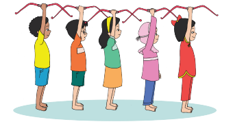
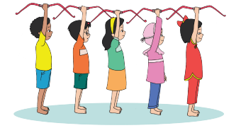
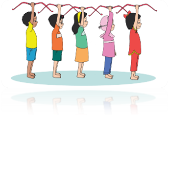
B
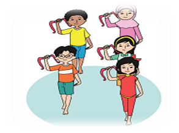
C
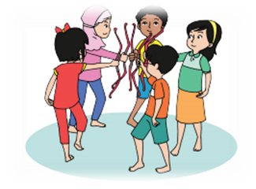
D
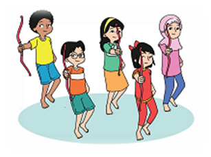
E
-
KUNCI
A
Warning:!!!
Jangan merubah kolom yang berwarna kuning
Jangan merubah layout table dibawah ini
1 | PERTANYAAN | Faktor penyebab keberagaman di Indonesia adalah …. |
A | Pernah dijajah selama ratusan tahun | |
B | Pernah mengalami krisis ekonomi | |
C | Kondisi negara Indonesia yang berbentuk kepulauan | |
D | Kemajuan ilmu teknologi dan komunikasi | |
E | - | |
KUNCI | C |
2 | PERTANYAAN | Bangsa Indonesia memiliki semboyan yang mengikat keberagaman bangsa menjadi satu kesatuan. Semboyan tersebut berbunyi .... |
A | Rawe-rawe rantas malang-malang putung | |
B | Bhineka Tunggal Ika | |
C | Sumpah Palapa | |
D | Garuda Pancasila | |
E | - | |
KUNCI | B |
3 | PERTANYAAN | 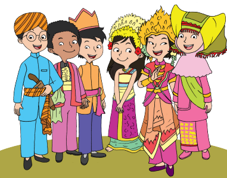Gambar di bawah ini menunjukkan bahwa di dalam masyarakat Indonesia terdapat…. |
A | Keragaman Religi | |
B | Keragaman pakaian adat | |
C | Keragaman makanan | |
D | Keragaman tempat beribadah | |
E | - | |
KUNCI | B |
4 | PERTANYAAN | Suku Badui berasal dari .... |
A | Maluku | |
B | Jawa barat | |
C | Kalimantan | |
D | Papua | |
E | - | |
KUNCI | B |
5 | PERTANYAAN | Perhatikan pernyataan berikut ! 1) Faktor letak geografis Indonesia 2) Faktor iklim di Indonesia 3) Faktor sejarah atau keturunan 4) Faktor pengaruh budaya dari luar 5) Faktor jumlah penduduk di Indonesia Dari pernyataan di atas, faktor-faktor penyebab keberagaman di Indonesia adalah …. |
A | 1), 3), 4) | |
B | 2), 3), 4) | |
C | 1), 2), 3) | |
D | 3), 4), 5) | |
E | - | |
KUNCI | A |
6 | PERTANYAAN | Dalam kehidupan masyarakat yang beraneka ragam , maka sikap yang perlu kita kembangkan adalah …. |
A | Tangguh | |
B | Mengobrol | |
C | Menghormati | |
D | Pantang menyerah | |
E | - | |
KUNCI | C |
7 | PERTANYAAN | Berikut ini yang termasuk keberagaman di bidang budaya adalah…. |
A | Agama, bahasa, dan rumah adat | |
B | Pakaian, rumah adat, dan makanan | |
C | Warna kulit, alat musik, dan agama | |
D | Bahasa, rumah adat, dan agama | |
E | - | |
KUNCI | A |
8 | PERTANYAAN | Kata tanya yang digunakan untuk menanyakan suatu kejadian atau peristiwa adalah …. |
A | Apa | |
B | Bagaiman | |
C | Mengapa | |
D | Kapan | |
E | - | |
KUNCI | A |
9 | PERTANYAAN | 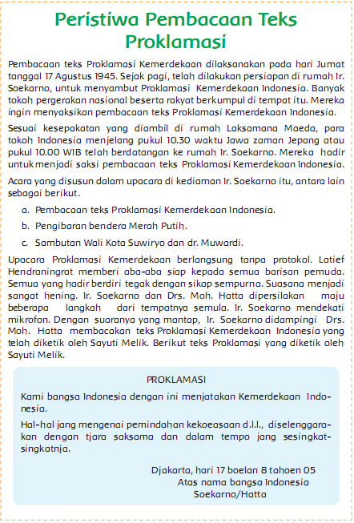 Dimana teks proklamasi di bacakan .... |
A | Rumah Ir Soekarno | |
B | Rumah Drs Moh Hatta | |
C | Rumah Laksamana Maeda | |
D | Rumah Ir Murwardi | |
E | - | |
KUNCI | C |
10 | PERTANYAAN | Kapan proklamasi kemerdekaan dibacakan …. |
A | 17 Agustus 1946 | |
B | 18 Agustus 1946 | |
C | 17 Agustus 1945 | |
D | 18 Agustus 1945 | |
E | - | |
KUNCI | C |
11 | PERTANYAAN | Penulisan kalimat penutup dalam surat undangan rapat yang tepat adalah …. |
A | Besar sekali harapan kami atas kehadiran Saudara | |
B | Demikian, atas kehadiran Bapak/lbu orang tua/wali siswa, sebelumnya kami ucapkan terima kasih. | |
C | Demikian surat ini kami buat, atas kerja samanya kami ucapkan banyak sekali terima kasih | |
D | Karena begitu pentingnya acara, kami sangat mengucapkan terimakasih | |
E | - | |
KUNCI | B |
12 | PERTANYAAN | Menulis surat undangan resmi menggunakan bahasa yang .... |
A | Lucu | |
B | Santai | |
C | Baku | |
D | Indah | |
E | - | |
KUNCI | C |
13 | PERTANYAAN | Berikut ini ciri-ciri undangan : 1) Menggunakan bahasa resmi 2) Tujuan surat bersifat pribadi 3) Tidak menggunakan kop surat 4) Menggunakan kop surat 5) Adanya nomor surat Dari ciri-ciri surat di atas, yang termasuk ciri-ciri surat undangan resmi adalah …. |
A | 1), 2), 3) | |
B | 2), 3), 4) | |
C | 3), 4), 5) | |
D | 1), 4), 5) | |
E | - | |
KUNCI | D |
14 | PERTANYAAN | Bagian surat resmi yang berisi nama instansi, logo dan alamat instansi disebut …. |
A | Kop surat | |
B | Salam pembuka | |
C | Perihal | |
D | Nomor surat | |
E | - | |
KUNCI | A |
15 | PERTANYAAN | Bau parfum dengan cepat tercium oleh orang dalam satu ruangan. Hal ini menunjukkan bahwa sifat benda gas adalah …. |
A | Menekan ke segala arah | |
B | Mempunyai berat | |
C | Mengalir | |
D | Memenuhi ruangan | |
E | - | |
KUNCI | D |
16 | PERTANYAAN | Ketika suhu benda tinggi, kalor yang dikandung oleh benda juga.... |
A | Rendah | |
B | Banyak | |
C | Besar | |
D | Kecil | |
E | - | |
KUNCI | C |
17 | PERTANYAAN | Peristiwa mencair sebagai bentuk perubahan wujud benda karena kalor atau panas yaitu…. |
A | Lilin dipanaskan | |
B | Baju basah yang dijemur dibawah sinar matahari | |
C | Air yang dimasukkan ke dala freezer | |
D | Kapur barus ( kamper ) yang disimpan di dalam lemari | |
E | - | |
KUNCI | A |
18 | PERTANYAAN | 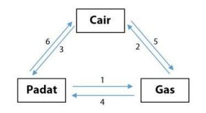Perhatikan gambar di bawah ini ! Perubahan wujud yang ditunjukan pada nomor 1 dan 5 adalah …. |
A | Menyublim dan mengembun | |
B | Menyublim dan menguap | |
C | Mengkristal dan menguap | |
D | Mengkristal dan mencair | |
E | - | |
KUNCI | B |
19 | PERTANYAAN | Kertas karton yang dibakar akan berubah menjadi .... |
A | Arang | |
B | Kayu | |
C | Abu | |
D | Tanah | |
E | - | |
KUNCI | C |
20 | PERTANYAAN | Air lama kelamaan akan mendidih apabila ... |
A | Dimasukkan kedalam kulkas | |
B | Dimasak | |
C | Dituang kedalam ember | |
D | Dijemur | |
E | - | |
KUNCI | B |
21 | PERTANYAAN | Salah satu perubahan wujud benda yang disebabkan oleh kalor, yaitu peristiwa pengkristalan. Apakah yang dimaksud dengan pengkristalan? Sebutkan contoh dari pengkristalan! |
A | Perubahan gas ke padat | |
B | Perubahan cair ke padat | |
C | Perubahan padat ke cair | |
D | Perubahan cair ke gas | |
E | - | |
KUNCI | A |
22 | PERTANYAAN | Organisasi pergerakan nasional Boedi Oetomo dipimpin oleh .... |
A | Dr. Sutomo | |
B | Soegondo Djoyopuspito | |
C | Cipto Mangunkusumo | |
D | Suwardi suryaningrat | |
E | - | |
KUNCI | A |
23 | PERTANYAAN | Peristiwa heroik di Surabaya yaitu Orang Belanda mengibarkan bendera Merah Putih Biru di atap hotel. Rakyat kemudian menyerbu hotel, menurunkan, dan merobek warna biru bendera itu untuk dikibarkan kembali. Insiden ini terjadi pada tanggal.... |
A | 26 September 1945 | |
B | 19 September 1945 | |
C | 15 Oktober 1945 | |
D | 6 Oktober 1945 | |
E | - | |
KUNCI | B |
24 | PERTANYAAN | Latar belakang terjadinya penjelajahan samudra yang dilakukan oleh bangsa Eropa ke Asia bahkan Indonesia adalah 3G yaitu …. |
A | Gol, Glory dan Gospel | |
B | God, Gold dan Glory | |
C | Gold, Glory dan Gospel | |
D | God, Glory dan Gospel | |
E | - | |
KUNCI | C |
25 | PERTANYAAN | Tokoh di bawah ini yang tidak mengusulkan rumusan dasar negara …. |
A | Mr. Mohammad Yamin | |
B | Mr. Soepomo | |
C | Drs. Mohammad Hatta | |
D | Ir. Soekarno | |
E | - | |
KUNCI | C |
26 | PERTANYAAN | Bangsa pertama yang menjajah Indonesia adalah …. |
A | Spanyol | |
B | Portugis | |
C | Jepang | |
D | Belanda | |
E | - | |
KUNCI | B |
27 | PERTANYAAN | PPKI dibentuk pada tanggal .... |
A | 5 Agustus 1945 | |
B | 7 Agustus 1945 | |
C | 20 Agustus 1945 | |
D | 17 Agustus 1945 | |
E | - | |
KUNCI | B |
28 | PERTANYAAN | Hal yang mendorong pedagang Eropa Barat memonopoli perdagangan adalah…. |
A | Melimpahnya bahan makanan | |
B | Rempah-rempah | |
C | Kain batik | |
D | Melimpahnya bahan tambang | |
E | - | |
KUNCI | B |
29 | PERTANYAAN | Notasi angka 3 dibaca.... |
A | Sol | |
B | La | |
C | Mi | |
D | Re | |
E | - | |
KUNCI | C |
30 | PERTANYAAN | Lagu di bawah ini yang menggunakan tangga nada Mayor adalah …. |
A | Syukur | |
B | Maju Tak Gentar | |
C | Mengheningkan Cipta | |
D | Maju mundur | |
E | - | |
KUNCI | B |
31 | PERTANYAAN | Tangga nada yang memiliki lima buah nada adalah tangga nada .... |
A | Diatonis | |
B | Diagrafis | |
C | Pentatonis | |
D | Penorama | |
E | - | |
KUNCI | C |
32 | PERTANYAAN | Perpindahan posisi penari secara berpola pada saat menari disebut …. |
A | Pola garis | |
B | Pola lantai | |
C | Pola gerak | |
D | Pola irama | |
E | - | |
KUNCI | B |
33 | PERTANYAAN | Gambar gerakan tari yang menunjukkan Pola lantai horizontal adalah .... |
A |
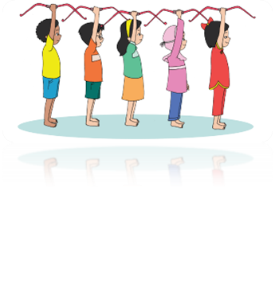 | |
B | 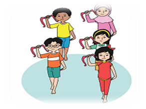 | |
C | 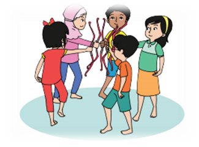 | |
D | 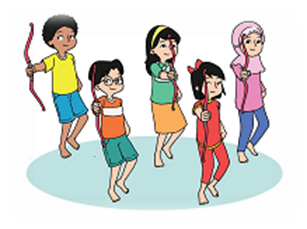 | |
E | - | |
KUNCI | A |
34 | PERTANYAAN | Berikut ini yang bukan menjadi bagian dari seni rupa nasional adalah …. |
A | Seni lukis | |
B | Seni kerajinan tangan | |
C | Seni karawitan dan tari | |
D | Seni patung | |
E | - | |
KUNCI | C |
35 | PERTANYAAN | Lukisan merupakan seni rupa .... |
A | Terapan | |
B | Dua dimensi | |
C | Tiga dimensi | |
D | Abstrak | |
E | - | |
KUNCI | B |